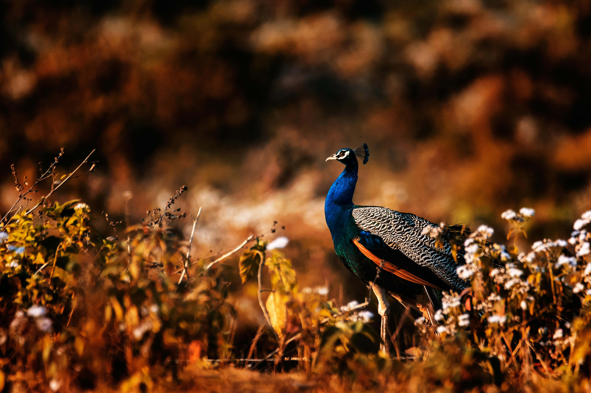
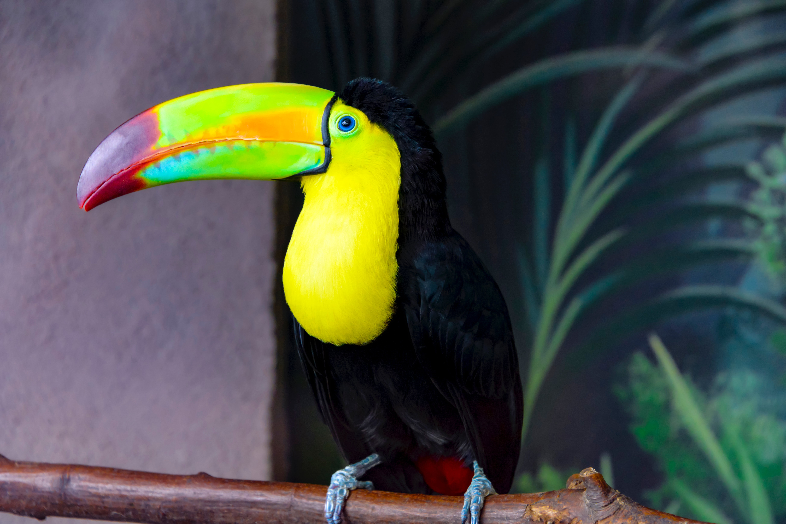
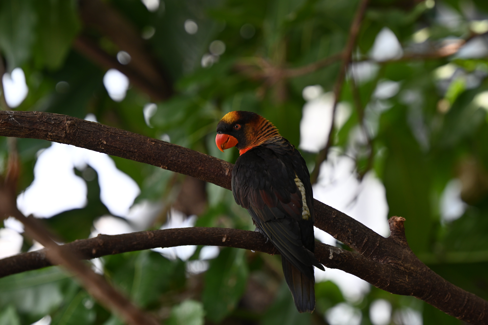

ДОБРО ПОЖАЛОВАТЬ
Добро пожаловать на наш фейковый сайт наблюдения за птицами. Если бы это был настоящий сайт, это было бы идеальное место, куда можно прийти, чтобы узнать больше о наблюдении за птицами, независимо от того, являетесь ли вы новичком, желающим научиться заниматься наблюдением за птицами, или экспертом, желающим поделиться идеями, советами и фотографиями с другими людьми. -мыслящие люди.
Так что не теряйте времени! Получите то, что вам нужно, затем выключите компьютер и выходите на природу
Павлин
Научное название: (Pavo cristatus)
Места обитания: Павлины обитают в различных регионах, таких как Индия, Шри-Ланка, Мьянма и другие части Юго-Восточной Азии.
Описание:
-Характеристики оперения: Самцы, называемые петухами, выделяются своими огромными и красочными хвостовыми перьями, или павлинами. Эти перья могут быть развернуты во время парадного показа, образуя великолепный веер. Они имеют разнообразные оттенки, включая синий, зеленый, желтый и оранжевый, а также глазки на концах, создающие визуальный эффект.
-Самки: Самки, называемые павлиницами, имеют менее яркое оперение, обычно коричневатого цвета. Это помогает им быть менее заметными в природной среде во время высиживания яиц.
Поведение и образ жизни:
-Парадное поведение: Самцы используют свои красочные перья во время парадного показа для привлечения внимания самок. Они раскрывают свои хвосты, поднимают их и создают удивительное зрелище для окружающих.
-Социальная структура: Павлины обычно образуют небольшие группы, включающие самцов и самок. В период размножения они становятся более активными, и самцы конкурируют между собой за внимание самок.
Значение в культуре и символике:
-Символ красоты: Павлин часто рассматривается как символ красоты, грации и гордости. Его изящное оперение вдохновляло искусство, литературу и религиозные обряды в разных культурах.
-Религиозные аспекты: В некоторых культурах павлин ассоциируется с божествами и является символом благополучия и красоты.
Сохранение:
-Вида в природе: Павлины в целом не являются вымирающим видом, их популяция стабильна. Однако сохранение их естественной среды и противодействие браконьерству остаются важными задачами для поддержания устойчивости популяции.
Тукан
Семейство: (Ramphastidae)
Места обитания: Туканы обитают в тропических лесах Центральной и Южной Америки, включая дождевые леса Амазонии.
Описание:
-Красочные оперения: Туканы привлекают внимание своими яркими и разноцветными оперениями. Их клювы часто бывают крупными и разноцветными, что придает им уникальный и необычный внешний вид.
-Крупные клювы: Одной из характерных особенностей туканов является их крупный клюв, который может быть ярким красным, оранжевым, желтым, зеленым или даже черным. Клювы также могут быть разнообразной формы, добавляя экзотичность их внешнему виду.
Виды туканов:
- Кёльцевой тукан (Keel-billed Toucan): Известен своим красочным клювом и многокрасочным оперением, включая яркую голубую грудь.
- Эмператорский тукан (Emperor Tamarin): Маленький вид тукана с красивым оранжевым клювом и черными и белыми полосами на лице.
- Черноподбородковый тукан (Channel-billed Toucan): Обладает массивным черным клювом с насыщенными цветами и разноцветным оперением.
Образ жизни и поведение:
-Рацион: Туканы питаются фруктами, ягодами, насекомыми и мелкими животными. Их клювы служат для защиты, а также для долгих поисков пищи в верхних слоях деревьев.
-Общество: Обычно туканы образуют небольшие группы. Они активны в дневное время и могут издавать характерные звуки, в том числе громкие крики.
Символика и культурное значение:
-Символ богатства и изобилия: В некоторых культурах туканы считаются символами богатства, изобилия и красоты.
-В искусстве и декоре: Их красочные клювы и оперение часто изображаются в искусстве и используются в декоре, придавая яркость и оригинальность.
сохранение:
-Состояние популяции: Большинство видов туканов остаются стабильными, но некоторые подвергаются угрозам из-за потери естественной среды и незаконной торговли.
-Защитные меры: Сохранение тропических лесов, контроль незаконной торговли и образовательные программы важны для защиты туканов и их естественных сред.
Лори
Семейство: (Psittaculidae)
Места обитания: Лори, также известные как лорики, обитают в тропических и субтропических лесах Юго-Восточной Азии, Австралии и островах Тихого океана.
Описание:
-Яркое оперение: Лори привлекают внимание своим многокрасочным оперением. Они часто имеют яркие цвета, включая зеленый, красный, синий, желтый и оранжевый.
-Компактные размеры: Лори обычно маленькие по размеру, что делает их более подвижными и маневренными в плотных лесах.
Виды лорикидусов:
- -Радужный лорикет (Rainbow Lorikeet): Одним из известных видов лори является радужный лорикет, который обитает в Австралии. У него яркое радужное оперение, включая голубые, зеленые, желтые и красные цвета.
- -Черноголовый лори (Black-capped Lory): Обладает черным клювом и черной головой, а туловище украшено красно-желтым оперением.
Поведение и образ жизни:
-Питание: Лори питаются нектаром, плодами, цветами, пыльцой и некоторыми видами насекомых. Их клювы адаптированы для сосания нектара.
-Социальные группы: Эти птицы часто образуют социальные группы и могут быть общительными. Они проявляют активность в дневное время.
Символика и значение:
-В культуре: Лори часто входят в культурные мифы и предания некоторых австралийских аборигенов. Они могут символизировать красоту и жизнерадостность.
Сохранение:
-Угрозы: Некоторые виды лорикидусов подвергаются угрозам из-за потери естественной среды, браконьерства и торговли дикими птицами.
-Защитные меры: Работы по сохранению флоры и фауны в их естественных местах обитания, контроль торговли и образовательные программы направлены на поддержание популяций лорикидусов и сохранение их разнообразия.